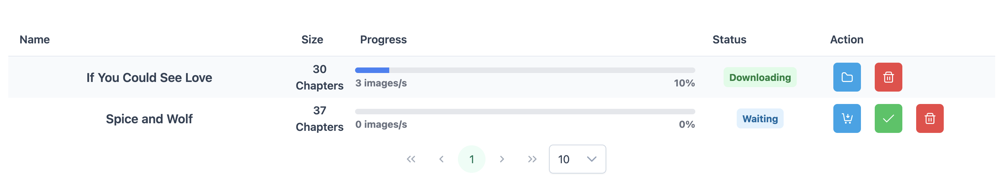

Dashboard
The dashboard will display all content Media-Provider is currently processing. From here you can:
- Stop or cancel content
- View downloading content's progress
- Expected remaining time (not all providers support this)
- View directory structure of the download
- Choose which files should be downloaded*
The remaining time is simply the remaining ratio of the remaining size and current speed.
*Files can only be filtered if you choose not to start the download imminently after searching

Content State
| State | Description |
|---|---|
| Downloading | The content is currently being downloaded |
| Ready | The content is ready to start downloading, but the client doesn't allow it to start yet. This will be because of max amount of downloads at once |
| Waiting | The info needed to start downloading has been loaded, but content wasn't allowed to start by the user. You may adjust to download files in this state |
| Loading | The content is loading the needed information to start downloading |
| Queued | The download client has blocked the content from loading information. It will start when a spot is freed |
| Cleanup | The content has finished downloaded (or was canceled) and is now cleaning up. I.e. Removing, moving, or zipping files |
Actions
| Action | Description |
|---|---|
| Browse directory | Open a directory browser with the download directory as root, for simple viewing |
| Set content | Lists all files/content to be downloaded, you may filter some out. Keep in mind that non-torrent providers will automatically filter on previously downloaded content |
| Mark ready | Marks content in the waiting state as ready to download. Will start downloading when a spot frees up |
| Downloading | The content is being downloaded |